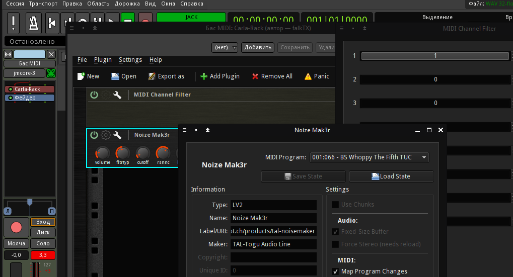

Попробуем подобрать бас, подходящий к нашим глубоким бочкам. Используем плагин TAL Noize Mak3r, там есть хороший субосциллятор и хорус. Создадим MIDI-дорожку с ним, и дадим ей имя Бас MIDI.
Подключаем эту дорожку к шине Басы. Матрицу маршрутизации можно вызвать правым щелчком на кнопке выходов линейки микшера новой дорожки.


Вставим также фильтр MIDI-каналов (перед плагином NoizeMak3er), но оставим включенным здесь только первый канал. Дорожку надо подключить ко входу комнаты Claudia Пульт.


Теперь откроем окно NoizeMak3r и пробуем выбрать какой-нибудь из пресетов. Большой список прокручивать мышкой неудобно, но меню, к счастью, реагирует на кнопки Home/End/PgUp/PgDn. Правда, переключать пресеты один за одним, одновременно пробуя их на клавиатуре, не получится.

При желании можно было бы "обернуть" синтезатор и фильтр каналов в Carla-Rack (удалить оба, потом Добавить плагин/По категории/Plugin/Carla-Rack, затем добавить оба в стойку Carla). Там в окне параметров есть поле MIDI Program, в котором можно перебирать пресеты кнопками вверх-вниз, одновременно пробуя их на MIDI-клавиатуре. Но они отображаются не все, а только те, что ниже ! Startup Juno OSC TAL.
Но всё же, остановимся на варианте без лишних сложностей. Просто загрузим пресет BS No character bass 5, который позже немного подредактируем. А пока только убавим громкость (ручка Volume) на 6 дБ, чтобы не перегружался микшер.

Сохраним сессию и проект.